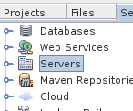

Install
How to install and contribute to the project **.
Get started
You will need the following materials to study and deploy the project.
- A PC with any Linux distribution installed. We use and tested on Ubuntu and Debian. We haven’t test but it might work on Windows and Apple machines.
- Netbeans IDE - to edit the code. You can install here.
- Java JDK - 7.
- Mysql.
- Github
Installation procedures are described below. It was tested using Ubuntu 14.04 on a 64 bits machine.
Java
To install Java JDK 7 copy and paste the following code inside the Terminal (Find it using the dash or just press Ctrl + Alt + T). We promise that the project won’t work with versions 6 and 8.
sudo add-apt-repository ppa:webupd8team/java
sudo apt-get update
sudo apt-get install oracle-java7-installer
MySQL
Copy and paste the following inside the terminal.
sudo apt-get install mysql-server
During installation, you will be prompted to insert a password. Save an put it in a safe.
NetBeans
Download Netbeans here. Pick the Java EE version. Once downloaded, open the terminal and go to Download folder.
sudo bash netbeans-8.0-javaee-linux.sh
Glassfish Server
The project was tested on Glasshfish Server versions 3.x.x. To download it, open Netbeans and the steps described on the images. If you prefer, you can also download it from the project page here.
Step 1
Left-click on services tab.

Step 2
Right-click on server

Step 3
Select Add server, then “Glassfish”. Press next and mark the checkbox. After that, click on “Download now” and choose the option Glassfish 3.x.x.x.

Github
To download the project we recommend the git program. With git you will be able to fork the project and distribute the code easily. To install, type on terminal:
sudo apt-get install git
If you don’t have a clue about how git works, we recommend to you this (page)[https://guides.github.com/]. Whether your checked the link before or not, you can catch up the following steps.
For the git newbies
- Create an account here.
- On terminal, type the following commands.
git config --global user.name "John Doe"
git config --global user.email johndoe@example.com
That’s all for now.
Donwload
To download, just open the terminal and type.
git clone https://github.com/crepeia/wati.git
Done. Now the project folder is located in your home folder “~”.
Set the database
We are almost there. We just need to set the database. Follow these instructions to create the database. Open the terminal (again!) and type:
mysql -u root -p
You need to insert your root password (the one that you should’ve put in the safe). You need to run the following commands:
create user wati@localhost identified by "wati1235";
create database wati;
grant all privileges on wati.* to wati@localhost;
Voilá! Now everything is set to run the project on your machine.
Run
If you have completed the steps above. Open Netbeans, go to files - > open project and browse to the donwloaded folder. Now execute de project using the run command.
Translation
The translation files are located in “Source Packages” folder, inside the controller “wati-utility”. They all have names starting with messages_xx_properties.
Graphics
Images and Vectors
The images are in Web Pages -> resources -> default -> images. If you like to change and adapt them, use the vector file ‘img-vector.svg’ located in /flowchart and request folder. We recommend the open-source software Inkscape to work with vector graphics.
Video
You can download the editable intro video here. To create the intro video, we used Blender, an all-around open-source 3d editor. You can download it here. Be advised: blender is tricky and has a steep learning curve, feel free to reach us.
Stylesheet
The CSS code is located in Web Pages -> resources -> default -> css. —
Seeking help?
Reach us at henriquepgomide@gmail.com